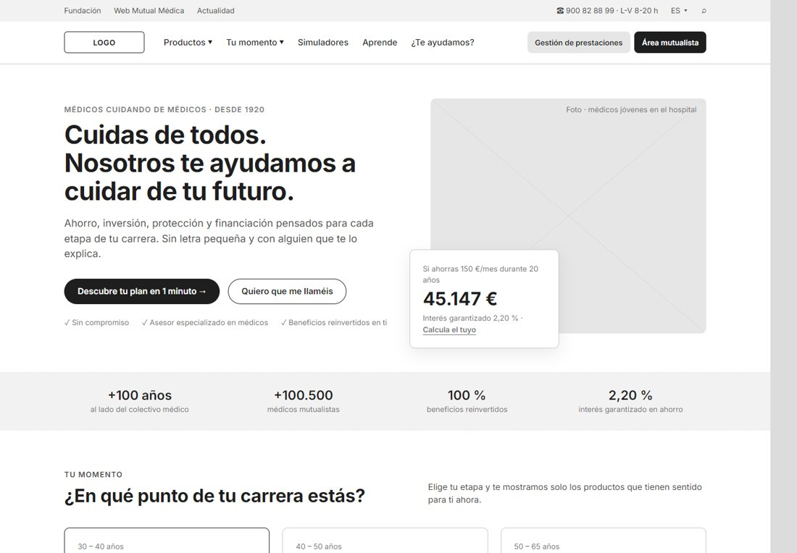
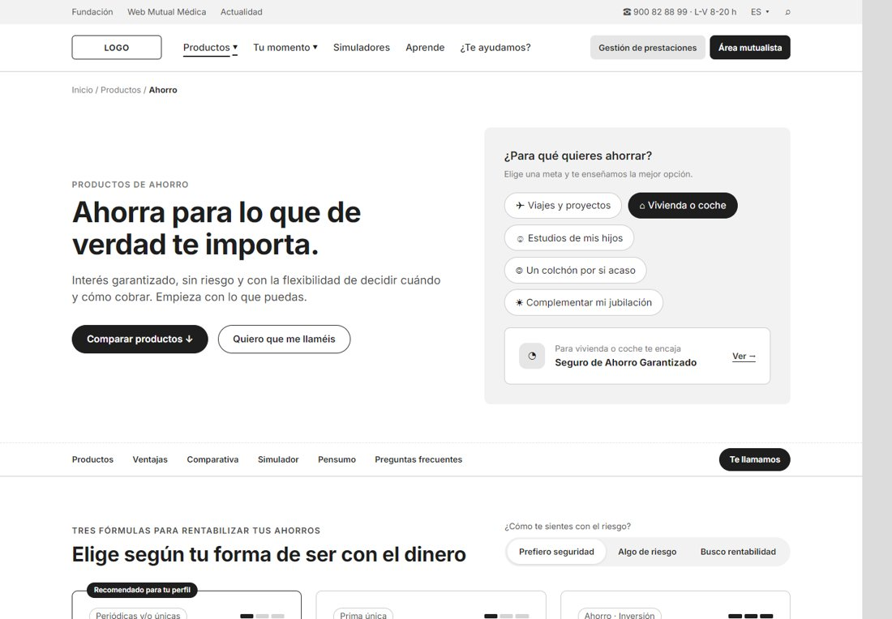
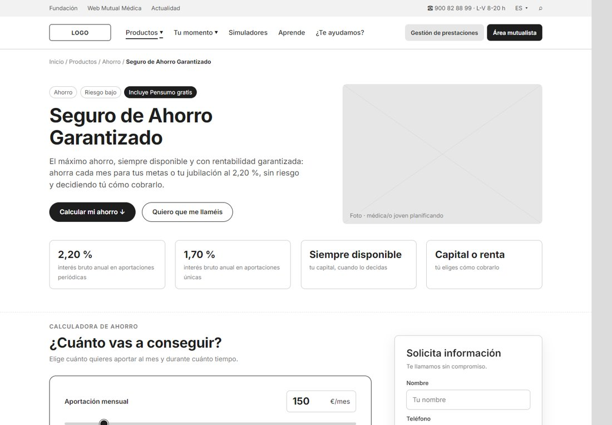
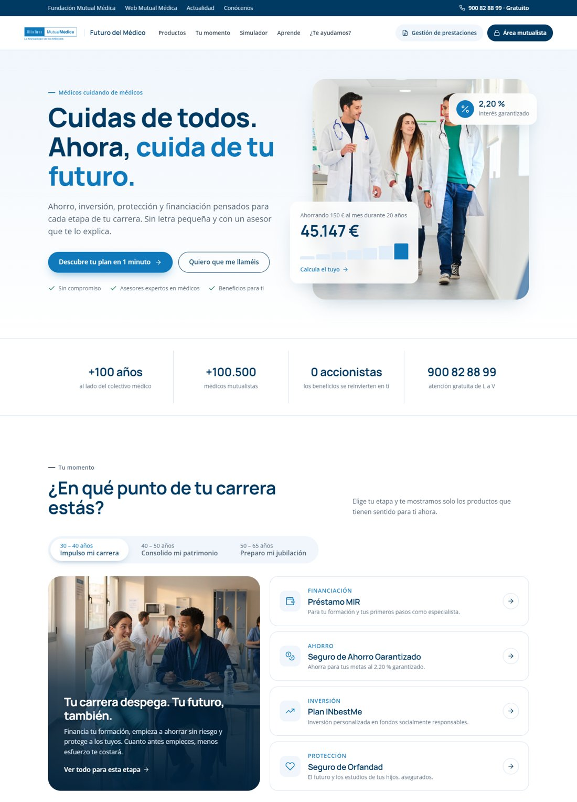
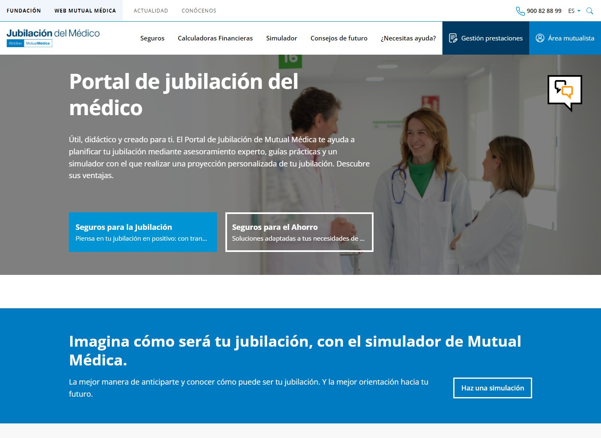
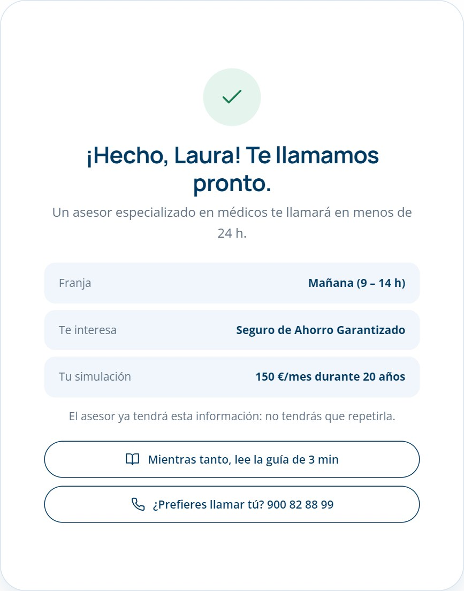
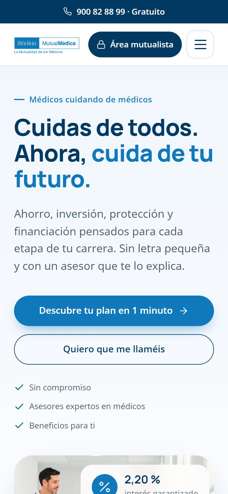
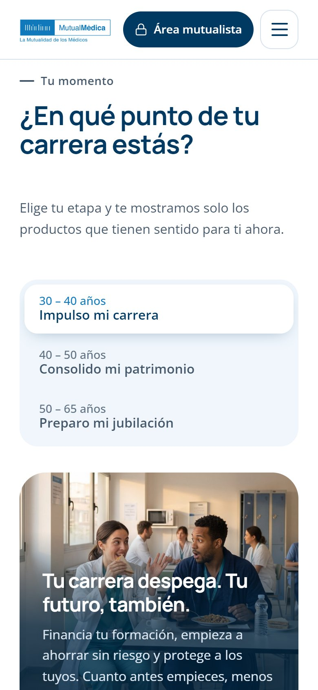
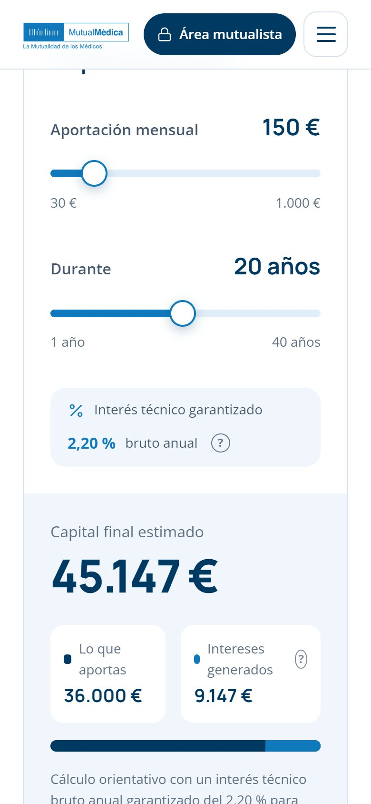
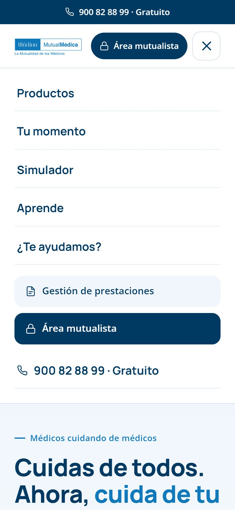

Del portal del jubilado al Futuro del Médico.
Nueva propuesta de valor, experiencia y diseño para captar y capacitar a médicos de 30 a 65 años, con foco en la conversión.
Contenido
Qué vamos a ver
El reto pide pasar de un portal informativo y estático, pensado para el jubilado, a una herramienta que acompañe al médico durante toda su carrera y genere negocio.
Estrategia
Reto, target, propuesta de valor y arquitectura.
01Fases del proyecto
Del research al desarrollo, con los puntos clave de cada fase.
02Wireframes
Home, categoría Ahorro y Seguro de Ahorro Garantizado.
03Diseño UI
Home con el look&feel evolucionado de la marca.
+Anexo
Antes y después, benchmark, flujo, móvil e hipótesis.
00 · Estrategia
Un portal para toda la carrera, no solo para el final.
El punto de partida
- Portal muy estático e informativo, organizado por producto.
- Mensajes y look&feel pensados para un target sénior: el médico de 30 años no se siente interpelado.
- Poco enfocado a conversión y captación: CTAs genéricos y pocas herramientas.
- Lenguaje financiero para médicos que no son expertos.
A quién hablamos
Necesita financiación, empezar a ahorrar e invertir y proteger a su familia. Poco tiempo, cero tecnicismos.
Quiere maximizar sus ahorros para la jubilación y proteger a su familia. Busca confianza y hablar con alguien.
Propuesta de valor
"Futuro del Médico" acompaña a cada médico en cada momento de su vida para que cuide de sus finanzas, y de las de su familia, con la misma tranquilidad con la que cuida de sus pacientes.
Evolución de "Portal de jubilación del médico" a una marca paraguas que habla a los 30 y a los 60, bajo el respaldo de Mutual Médica.
Nueva marca que habla a los 30 y a los 60, navegación por momento vital y contenidos que atraen tráfico.
Lenguaje claro, glosario contextual, guías breves y un recomendador en 3 preguntas.
Simulador al 2,20 %, "Te llamamos" siempre visible y formulario con contexto para la venta telefónica.
00 · Estrategia
Arquitectura y embudo de conversión
Doble entrada: por necesidad (producto) o por momento vital. Las herramientas llevan al usuario del interés a la llamada.
Productos
- Ahorro (3)
- Inversión (2)
- Protección (3)
- Financiación (2)
- → 8 fichas de producto
Tu momento
- 30–40 · Impulso mi carrera
- 40–50 · Consolido mi patrimonio
- 50–65 · Preparo mi jubilación
Simuladores
- Simulador de ahorro
- Simulador de jubilación
- Recomendador
Aprende
- Guías
- Vídeos
- Glosario A–Z
Gestión de prestaciones
- Se mantiene
Área mutualista
- Se mantiene
SEO, contenidos, campañas por etapa
Tu momento, categorías, guías y glosario
Simulador, comparativa y recomendador
"Te llamamos" con la simulación adjunta
Llamada de un asesor en menos de 24 h
01 · Fases del proyecto
Seis fases, del research al desarrollo
Planteamiento a máximos. Cada fase puede comprimirse en un enfoque MVP según plazos y presupuesto.
Discovery y research
Sem. 1–4- Kick-off con negocio, marketing, call center y legal
- Auditoría de analítica, embudo y formularios
- Evaluación heurística y de accesibilidad
- Benchmark: aseguradoras, neobancos, roboadvisors
- Entrevistas a médicos de ambos segmentos y encuesta
- Dudas reales del call center
EntregableInforme de insights y oportunidades
Definición y estrategia
Sem. 4–7- Proto-personas y customer journey por momento vital
- Propuesta de valor y posicionamiento
- Arquitectura de información: card sorting y tree testing
- KPIs y plan de medición
- Roadmap y alcance del MVP (MoSCoW)
EntregableEstrategia, sitemap y roadmap
Ideación y diseño UX
Sem. 7–11- User flows: recomendador, simulador y captación de lead
- Wireframes lo-fi → mid-fi
- UX writing en lenguaje claro y glosario
- Prototipo navegable
- 2 rondas de test de usabilidad (6–8 médicos) e iteración
EntregablePrototipo validado con usuarios
Diseño UI y design system
Sem. 10–14- Evolución de marca: moodboard y style tiles
- Design system en Figma: tokens, componentes y estados
- Diseño hi-fi desktop y mobile
- Accesibilidad AA: contraste, foco, tamaños
- Preference test y handoff (Dev Mode, specs)
EntregableUI final + librería de componentes
Desarrollo y QA
Sem. 13–20- Sprints de 2 semanas con diseño en el equipo
- Componentes en el CMS actual (Liferay)
- Leads integrados con CRM y call center
- Etiquetado de eventos (GA4) y SEO
- QA funcional, accesibilidad, rendimiento y RGPD
EntregablePortal en producción
Lanzamiento y optimización
Sem. 21+- Lanzamiento progresivo y monitorización
- Dashboard de conversión por etapa
- A/B tests: hero, CTAs y formularios
- Heatmaps y feedback del call center
- Evolutivos: área personal, contratación online
EntregableMejora continua (CRO)
01 · Fases del proyecto
Planificación, equipo y cómo medimos el éxito
Cómo trabajamos
- Double Diamond para el diseño + Scrum para el desarrollo
- Validación con médicos reales en cada fase
- Diseño y desarrollo solapados para ganar tiempo
- Revisión legal y de compliance continua
Equipo
- Product Owner (Mutual Médica) y Project Manager
- UX Researcher · Senior UX/UI Designer · UX Writer
- Front-end, back-end y QA
- Analista de datos / CRO y SEO
KPIs de éxito
02 · Wireframes desktop
Tres pantallas clave del recorrido
Navegables e interactivos: las calculadoras funcionan y el botón "Anotaciones UX" muestra el porqué de cada decisión.



03 · Diseño UI · Home
La misma marca, con otra energía
El azul exacto del logo para acciones y datos clave; el navy aporta solidez. Contraste AA.
Manrope en titulares para un tono actual y cercano. Open Sans, la tipografía actual de la marca, en los textos.
Bento grid, tarjetas flotantes, esquinas amplias, microinteracciones y glosario contextual que ayuda sin interrumpir.
Fotografía de médicos jóvenes y cifras concretas (45.147 €) en lugar de mensajes abstractos.

Anexo · Antes y después
Del portal informativo al portal que convierte

123- Marca y mensaje de jubilación: el médico de 30 años no se siente interpelado.
- CTAs con el texto cortado ("…en positivo: con tran…") y sin jerarquía.
- Herramientas dispersas: simulador y calculadoras en menús separados.
- El 2,20 % garantizado no aparece en toda la home.
- Productos en listas de texto, sin datos, y solo ahorro y jubilación.
- Marca para toda la carrera y navegación por momento vital (30–65).
- Un CTA principal claro hacia el recomendador y "Te llamamos" como secundario.
- Simulador y recomendador integrados en la propia home.
- 2,20 % visible en hero, categorías y simulador.
- 4 categorías y 8 productos con su dato clave y glosario contextual.
Anexo · Benchmark
Qué hace la competencia y qué nos llevamos
PSN
Mutua de profesionales sanitarios. Pone en el hero su rentabilidad: 2,15 % garantizado y "100 % disponible", y ofrece calculadoras rápidas.
Nos llevamosEl dato en portada. Mutual Médica ofrece un 2,20 % y hoy no lo comunica en su home.
A.M.A.
La mutua de los profesionales sanitarios. Su CTA principal promete tiempo: "Calcula precio en menos de 2 minutos".
Nos llevamosUna promesa concreta en el CTA: "Descubre tu plan en 1 minuto".
Indexa Capital
Explica la inversión en 3 pasos, con un test de perfil de 2 minutos y señales de confianza con datos (clientes, supervisión CNMV, costes).
Nos llevamosRecomendador corto, proceso explicado en 3 pasos y confianza con cifras (+100 años, +100.500 médicos).
MyInvestor
Barrera de entrada mínima (invertir desde 1 €), lenguaje cercano, formación (blog y webinars) y enfoque móvil.
Nos llevamos"Empieza con lo que puedas", contenidos cortos para capacitar y diseño pensado para el móvil.
Ni PSN ni A.M.A. organizan su home por momento vital ni acompañan al médico no experto en la decisión. Ese es el espacio de Futuro del Médico: el que te entiende en cada etapa.
Webs públicas consultadas en septiembre de 2026.
Anexo · Flujo de conversión
Del primer clic a la llamada del asesor
SEO, campañas por etapa, newsletter
Elige su momento o hace el recomendador
Tarjetas y comparativa en lenguaje claro
Calculadora al 2,20 %
4 campos + simulación adjunta
Resumen y qué va a pasar
Asesor con contexto, en menos de 24 h

El momento que casi nadie diseña
Como la contratación es telefónica, lo que pasa después del formulario decide la venta. Diseñamos esa espera:
- Resumen de lo que ha pedido: franja, producto y simulación.
- "No tendrás que repetirlo": el asesor recibe el contexto en el CRM.
- Siguiente paso útil mientras espera: una guía de 3 minutos.
- Salida inmediata si tiene prisa: llamar al 900 82 88 99.
- Si no deja sus datos: recordatorio con su simulación, solo con consentimiento.
Anexo · Versión móvil
El target de 30–40 años decide desde el móvil
El brief pide desktop; esta es la misma home adaptada, sin perder ninguna función.

CTAs a todo el ancho y el dato de 45.147 € visible sin hacer scroll.

Etapas apiladas, fáciles de pulsar con el pulgar.

Sliders grandes y resultado en tiempo real.

"Gestión de prestaciones" y "Área mutualista" siempre a un toque.
Anexo · Hipótesis y métricas
Cada decisión es una hipótesis que vamos a medir
| Hipótesis | Cómo la validamos | Métrica | Objetivo inicial |
|---|---|---|---|
| 1Navegar por momento vital hace el portal relevante para los médicos de 30–40. | Test A/B: home por etapas vs. home por producto. | Clics a producto del segmento 30–40 | +20 % |
| 2Mostrar el 2,20 % en portada despierta el interés por el ahorro. | Test A/B del hero con y sin el dato. | Usos del simulador | +15 % |
| 3El recomendador reduce el abandono del médico no experto. | Test de usabilidad + embudo en analítica. | % que lo completa · % que deja lead | 40 % · 10 % |
| 4Un "Te llamamos" siempre visible genera más leads. | Test A/B con y sin CTA flotante. | Leads por sesión | +25 % |
| 5Si el asesor recibe la simulación, se cierran más contratos. | Comparar leads con y sin contexto en el CRM. | Ratio lead → póliza | +10 % |
Objetivos orientativos: se ajustan con los datos reales del portal en la fase de Discovery.
Gracias.
Médicos cuidando de médicos, ahora también de su futuro financiero, desde el primer día de residencia.